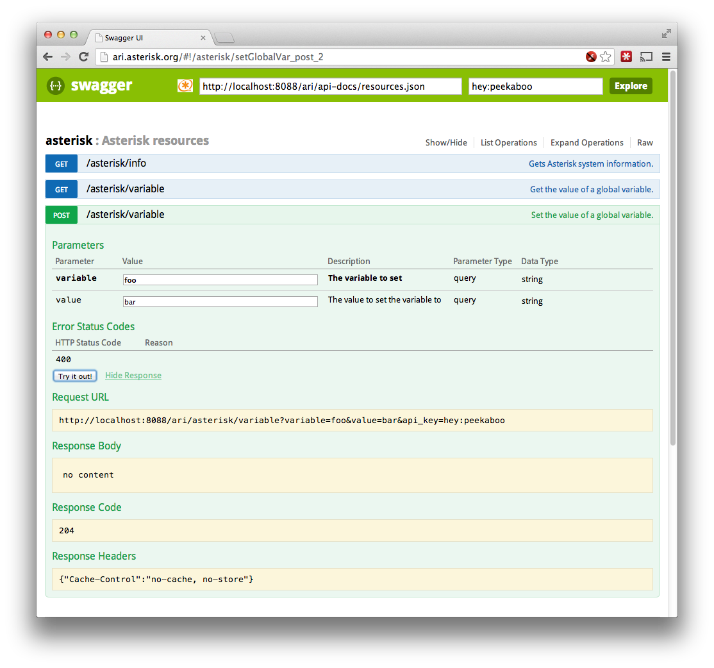

Using Swagger-UI
The REST API that makes up ARI is documented using Swagger, a lightweight specification for documenting RESTful API's. The Swagger API docs are used to generate validations and boilerplate in Asterisk itself, along with static wiki documentation, and interactive documentation using Swagger-UI.
Swagger-UI is a pure HTML+JavaScript application which can download Swagger api-docs, and generate an interactive web page which allows you to view resources, their operations, and submit API requests directly from the documentation. A fork of Swagger-UI is hosted on ari.asterisk.org, which enables DELETE operations (which are disabled by default in Swagger-UI), and sets the default URL to what it would be running Asterisk on your local system.
In order to access ARI, you have to populate the api_key field with a username:password configured in ari.conf. You should also set allowed_origins in ari.conf to allow the site hosting Swagger-UI to access ARI.
[general]
enabled=yes
;pretty=yes ; we don't need pretty-printing of the JSON responses in this
; example, but you might if you use curl a lot.
;
; In this example, we are going to use the version of Swagger-UI that is hosted
; at ari.asterisk.org. In order to get past CORS restrictions in the browser,
; That origin needs to be added to the allowed_origins list.
;
allowed_origins=http://ari.asterisk.org
[hey]
type=user
password=peekaboo
;read_only=no ; Set to yes for read-only applications
